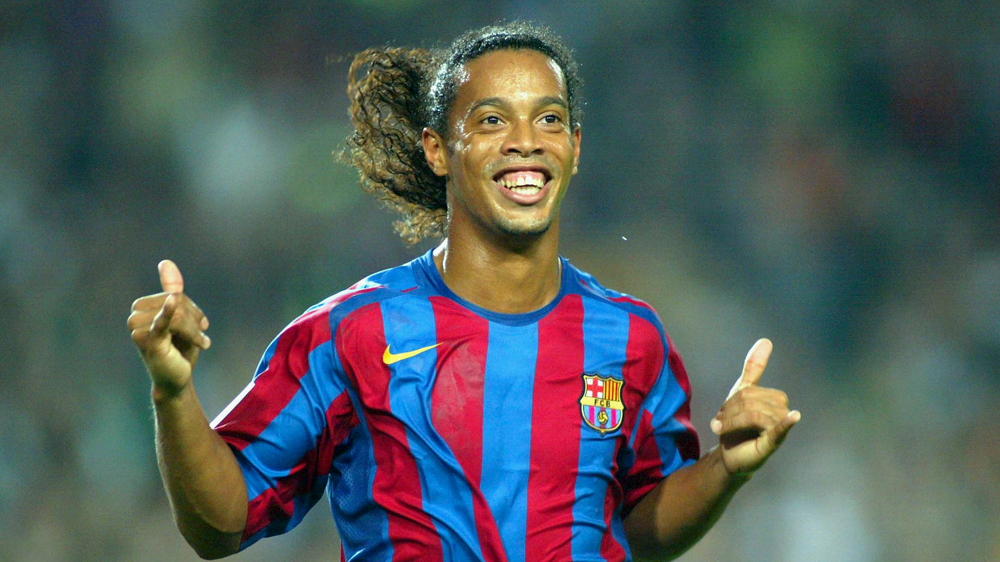

Sports Interests
I played Soccer for 6 years with Richmond FC. I played in the right back and goalkeeper position. This is a picture of a Soccer player, who in my opinion was one of the best ever. He is a Brazilian called Ronaldinho.
I played Table Tennis for 4 years. I am a national champion at both under 13 and under 15 level. I have represented Munster at a national level, unfortunately we did not win that competition but it was still an amazing experience. This is one of the best Table Tennis players in the world at the moment. His name is Fan Zhendong
I only recently took up Olympic Weightlifting in the UCC Weightlifting Club. I got really interested in weightlifting as my brother has competed in it for the last four years. I am the 1st year representative for the Weightlifting Club. This is the best weightlifter to ever live. His name is Lu Xiao Jun.